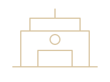
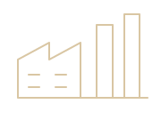
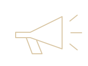
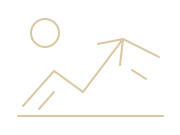

Estalinismo
en la Unión Soviética.
Del ascenso al poder a las huellas en la sociedad.
¿Cómo se construyó y sostuvo el poder estalinista, y cómo transformó la vida de la sociedad soviética?
FINALIDAD Y PÚBLICO
Propósito educativo e informativo: comprender cómo surgió y se sostuvo el poder estalinista y cómo transformó la sociedad soviética, mediante fuentes, videos y actividades interactivas.
Dirigido a: estudiantes de secundaria y primeros ciclos universitarios, y personas interesadas en conocer este proceso histórico.
INTEGRANTES
- 01Santiago Daniel Salas Sotillo
- 02Paolo Jesús Mostajo Alor
- 03Brandon Diaz Rivera
- 04Joaquín Enrique Ojeda Villafuerte
- 05jesus tupac yupanqui laura
- 06Santiago Valdiviezo Guardia
- 07VALENCIA ALEJANDRO
ELIGE UN PUNTO DE ENTRADA
Todo está conectado.
Recorre la red de izquierda a derecha.
Selecciona un tema
para entrar a su módulo.
Contexto histórico y antecedentes
Situación de la URSS y llegada de Stalin al poder

Gobierno y poder de Stalin
Concentración del poder y establecimiento de la dictadura

Economía y colectivización
Industrialización y transformación agrícola

Represión y propaganda
Control de la población y eliminación de opositores

Sociedad y vida cotidiana
Cambios en el trabajo, educación y condiciones de vida

Stalin y la Segunda Guerra Mundial
Movilización económica, militar y social de la URSS
Consecuencias y fin del estalinismo
Muerte de Stalin, desestalinización y legado político, económico y social
PERMITEIMPULSA Y CONTROLATRANSFORMANSE CONECTA CONCONTRIBUYE AL LEGADOPasa sobre un tema o selecciónalo con el teclado para explorar su conexión.
01 — 07 / DESLIZA PARA EXPLORAR →Las conexiones proponen un recorrido de estudio; su explicación y sus fuentes se encuentran en cada módulo. Las ilustraciones son símbolos temáticos, no documentos históricos.
UN RECORRIDO, UNA INVESTIGACIÓN
Explora. Relaciona. Interpreta.
Cada módulo reúne su explicación, el video del equipo y sus referencias. El contraste de fuentes está en el módulo 05; las conclusiones del proyecto, en el 07.
Comenzar por el contexto ↗